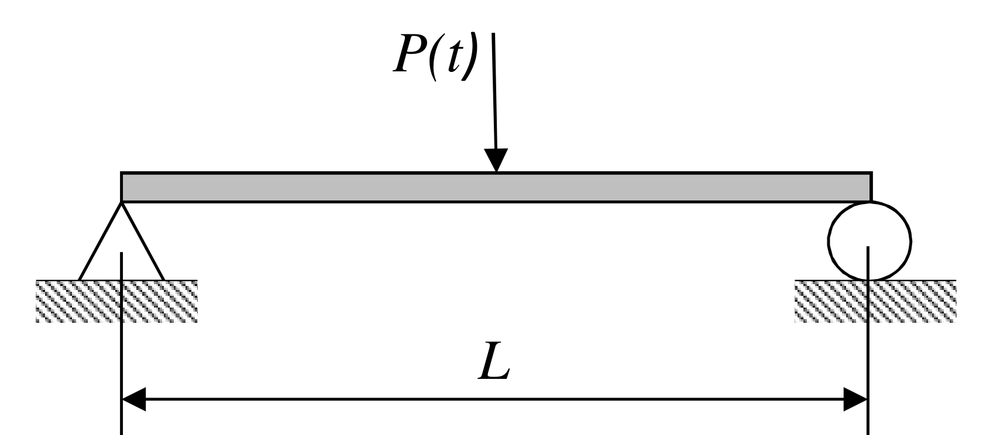
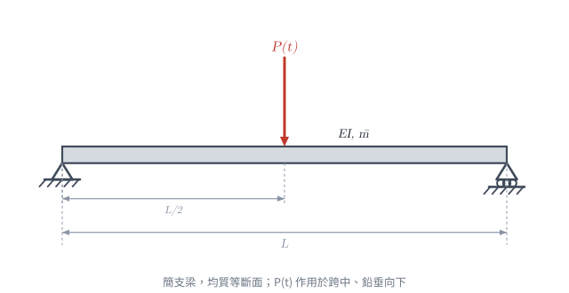
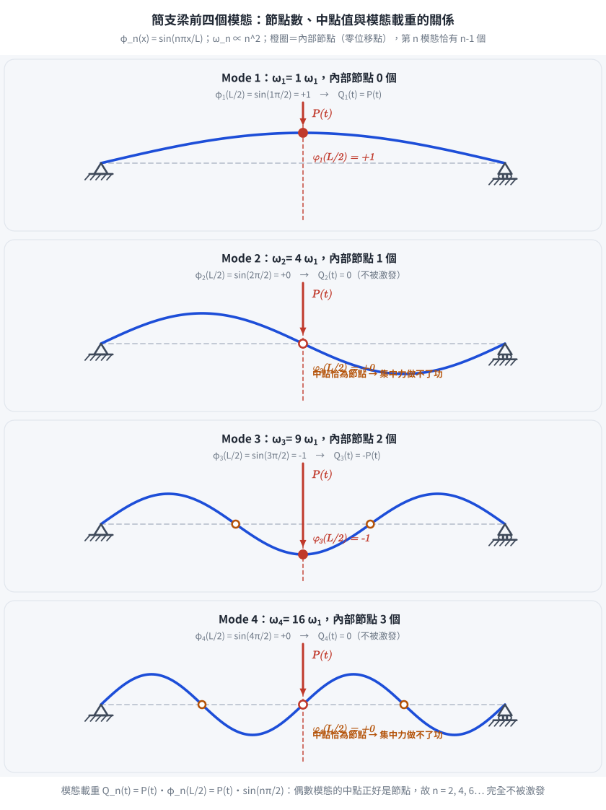

📄 題目正本：考卷原文・附圖・判讀清單（已確認）
SD-2023-1 題目正本
本檔只記錄考卷上寫了什麼、圖上畫了什麼，不含任何解法。解析見同資料夾
SD-2023-1.md。
判讀清單經使用者確認前，狀態為「待確認」；確認後本檔原則上不再修改（改動須回考卷原圖並記 log）。
| 項目 | 內容 |
|---|---|
| 考卷 | raw/exams/SD-2023_結構動力分析與耐震設計.pdf，第 1 頁（頁次 2－1），第一題 |
| 考年 | 2023（民國112年）專技高考結構工程技師「結構動力分析與耐震設計」 |
| 配分 | 25 分（㈠8 分、㈡12 分、㈢5 分） |
| 附圖 | SD-2023-1-fig-1.png（舊擷取，左上角有游標、下方切到下一行文字）、SD-2023-1-fig-2.png（2026-11-16 由考卷 500 dpi 重擷取） |
| 判讀狀態 | 已確認（2026-11-16，使用者授權依 Claude 建議。原轉錄：2026-11-16；PyMuPDF 110 dpi 整頁＋250–500 dpi 局部放大，PDF 文字層核對原文（$\omega_n$、$\phi_n$ 兩式為影像，目視照錄）；判讀於開啟解析前完成） |
1. 考卷原文（逐字）
一、長度為 $L$ 的均質等斷面簡支梁如圖。假設其斷面慣性矩為 $I$、彈性模數為 $E$、單位長度質量為 $\overline{m}$ 。在梁中點受鉛垂向下的集中力 $P(t)$ 作用。回答下列問題：
㈠推導運動方程式。（8 分）
㈡證明第 n 個模態之模態頻率為 $\omega_n=\dfrac{n^2\pi^2}{L^2}\sqrt{\dfrac{EI}{\overline{m}}}$ ，且模態函數為 $\phi_n(x)=\sin\!\left(\dfrac{n\pi x}{L}\right)$。（12 分）
㈢求第 n 個模態的模態載重函數。（5 分）
2. 考卷給的公式、附表與參數
- 考卷給的式子（㈡要證明的結果）：$\omega_n=\dfrac{n^2\pi^2}{L^2}\sqrt{\dfrac{EI}{\overline m}}$、$\phi_n(x)=\sin(n\pi x/L)$。
- 給定：$L$、$E$、$I$、$\overline m$（單位長度質量）、中點集中力 $P(t)$（向下）。
- 考卷沒有給：阻尼；$P(t)$ 的時間函數形式；座標 $x$ 的原點（$\phi_n$ 的形式隱含 $x$ 由一端支承量起）；初始條件。
- 卷首注意事項：㈠可以使用電子計算器。㈡不必抄題，作答時請將試題題號及答案依照順序寫在試卷上，於本試題上作答者，不予計分。㈢本科目除專門名詞或數理公式外，應使用本國文字作答。考試時間：2 小時。
3. 附圖

證據圖 SD-2023-1-fig-2.png（500 dpi 重擷取；舊圖 SD-2023-1-fig-1.png 內容相同，左上角有手形游標）
圖面文字照錄：P(t)、L
4. 判讀清單
| # | 項目 | 判讀 | 圖上／題文依據 | 把握 |
|---|---|---|---|---|
| 1 | 阻尼 | 考卷未提，按無阻尼處理。定案（使用者授權依建議）：主解無阻尼 | 題文、圖上皆無阻尼 | 不確定（解讀，已依建議定案） |
| 2 | 支承 | 左端鉸支承（三角形）、右端滾支承（圓），即簡支 | 500 dpi 目視；題文「簡支梁」 | 確定 |
| 3 | 跨度 | $L$，支承中心到支承中心 | 尺寸線延伸線對齊三角形頂點與圓心 | 確定 |
| 4 | 載重位置與方向 | 梁中點 $x=L/2$，鉛垂向下 | 題文「中點…鉛垂向下」；圖上箭頭位於梁中央（500 dpi 量測與跨中重合） | 確定 |
| 5 | 斷面與質量 | 均質等斷面，$EI$、$\overline m$ 沿梁長為常數 | 題文 | 確定 |
| 6 | 梁理論 | 細長梁（Euler–Bernoulli），不計剪切變形與轉動慣量 | 題文未提；㈡給的 $\omega_n$ 為 Euler–Bernoulli 梁結果 | 確定（解讀） |
| 7 | ㈢「模態載重函數」 | 第 $n$ 模態的廣義（模態）力，為 $P(t)$ 的函數 | 題文 | 確定（解讀） |
| 8 | 考卷沒有給 | $P(t)$ 形式、初始條件、數值 | — | 確定 |
轉錄：2026-11-16（SD-U1-2 題目正本推廣・組 U1-2-G3）
確認：2026-11-16 使用者授權依 Claude 建議確認（SD-U1-2 組 U1-2-G3，關卡一）
考題編號：SD-2023-1
主分類： SD-U1-2 運動方程式推導
副分類： SD-U1-3 單自由度、多自由度系統之動態分析及應用
分析方法： 連續體模態分析（梁振動）
標籤： 連續體梁 Euler-Bernoulli梁 簡支梁 運動方程式 模態分解法 模態頻率 模態函數 模態載重函數 偏微分方程 分離變數法
1. 題目（考卷原文見題目正本）
考卷原文、公式／附表、附圖與判讀清單（已確認）見
SD-2023-1-problem.md。本節只列解題時最容易讀錯的地方與本解使用的記號；題意以題目正本為準。

重繪自考卷附圖，依題目正本判讀清單；本圖攔下的判讀錯誤：P(t) 作用於跨中、方向向下，支承為左鉸右滾。
常見誤讀
| 項目 | 正確判讀 | 常見誤讀 |
|---|---|---|
| 支承 | 左鉸、右滾（簡支），跨度 $L$ 量至支承中心（判讀 #2、#3） | — |
| 載重 | 跨中 $x=L/2$、鉛垂向下的集中力 $P(t)$（判讀 #4） | 正負號與撓度正向不一致 |
| 阻尼 | 考卷未給，按無阻尼（判讀 #1，定案） | 自行加阻尼項 |
| ㈡ 的式子 | 考卷給的是要「證明」的結果（判讀 #6） | 直接套用而不由邊界條件推導 |
| ㈢「模態載重」 | 第 $n$ 模態的廣義力，為 $P(t)$ 的函數（判讀 #7） | 只寫 $P(t)$ 不乘振態值 |
本解記號： $w(x,t)$ 為梁撓度；$q_n(t)$ 為第 $n$ 模態廣義座標；$M_n$ 為模態質量；$\bar m$ 為單位長度質量。
2. 考題核心精神與出題者意圖
核心觀念： 連續體（分散式參數系統）的動力分析——從偏微分運動方程式出發，透過分離變數法求出模態頻率與模態函數，再應用模態正交性求模態載重函數。
出題者意圖：
- 測驗是否能從 Euler-Bernoulli 梁理論推導含集中力的 PDE（不是由課本背答案）
- 測驗分離變數法的操作流程與邊界條件的正確施加
- 測驗模態正交性的應用：集中力作用於節點位置對特定模態的影響（偶數模態消失）
考場關鍵： 第(三)小題的模態載重函數要能解釋 $\sin(n\pi/2)$，說明偶數模態不受激振的物理意義，可加分。
3. 解題戰略地圖與陷阱分析
作戰計畫：
- (一) 以 Euler-Bernoulli 梁微元分析 + D'Alembert 原理建立 PDE（含 Dirac delta 函數）
- (二) 令自由振動解 $w = \phi(x)q(t)$，分離變數，解 ODE，施加四個邊界條件，得頻率方程式與模態函數
- (三) 在模態方程式中，對方程式兩側乘以 $\phi_n(x)$ 並積分（利用正交性），提取模態載重函數
關鍵陷阱：
| # | 陷阱 | 應對策略 |
|---|---|---|
| 1 | 忘記集中力要用 $\delta(x - L/2)$ 表示 | PDE 右端寫 $P(t)\delta(x - L/2)$ |
| 2 | 邊界條件混淆：簡支端為零撓度 + 零彎矩（不是零斜率！） | $w(0)=0$、$w''(0)=0$、$w(L)=0$、$w''(L)=0$ |
| 3 | 解特徵ODE時保留四項（$\sin, \cos, \sinh, \cosh$），邊界條件才能消去 $B, D, C$ | 不可預設只剩 $\sin$ |
| 4 | 模態載重函數忘記積分 $\delta$ 函數的性質：$\int f(x)\delta(x-a)dx = f(a)$ | 熟悉 Dirac delta 的抽樣性質 |
3.5 變數層次分析（Variable Hierarchy Analysis）
複習提示：第一次解題後，在每個卡住的知識點旁標記
⚠；第二次複習時只看有⚠的項目。
最終目標
(一) PDE 運動方程式；(二) 證明 ωₙ 與 φₙ(x)；(三) 模態載重函數 Qₙ(t)
本題關鍵公式（依計算順序）
$\boxed{\cdot}$ = 需由前步驟推導，非題目直接給定的變數
$$\text{Step 1 (一): } \bar{m}\frac{\partial^2 w}{\partial t^2} + EI\frac{\partial^4 w}{\partial x^4} = P(t)\delta\!\left(x - \frac{L}{2}\right)$$
$$\text{Step 2 (二): 令 } w(x,t)=\phi(x)q(t),\quad \frac{\ddot{q}}{q} = -\frac{EI\phi''''}{\bar{m}\phi} = -\omega^2$$
$$\text{Step 3 (二): } \phi''''(x) - \boxed{\beta^4}\phi(x) = 0,\quad \beta^4 = \frac{\bar{m}\omega^2}{EI}$$
$$\text{Step 4 (二): 通解 } \phi(x) = A\sin\beta x + B\cos\beta x + C\sinh\beta x + D\cosh\beta x$$
$$\text{Step 5 (二): 施加 BC} \Rightarrow B=D=C=0,\;\sin(\beta_n L)=0 \Rightarrow \beta_n = \frac{n\pi}{L}$$
$$\text{Step 6 (二): } \omega_n = \boxed{\beta_n}^2\sqrt{\frac{EI}{\bar{m}}} = \frac{n^2\pi^2}{L^2}\sqrt{\frac{EI}{\bar{m}}}$$
$$\text{Step 7 (三): } Q_n(t) = \int_0^L P(t)\delta\!\left(x-\frac{L}{2}\right)\phi_n(x)\,dx = P(t)\sin\!\left(\frac{n\pi}{2}\right)$$
L1：題目直接給定
| 符號 | 數值 | 說明 |
|---|---|---|
| $L$ | 梁長 | 均質等斷面簡支梁跨度 |
| $\bar{m}$ | 單位長度質量 | 均勻分布 |
| $EI$ | $E \cdot I$ | 撓曲剛度 |
| $P(t)$ | 集中力 | 作用於 $x = L/2$ |
L2：需知識點推導
Step 1：建立 PDE
| 符號 | 公式／來源 | 卡關? |
|---|---|---|
| 撓曲剛度關係 | $M = -EI\frac{\partial^2 w}{\partial x^2}$（$w$ 向下為正、$M$ 下側受拉為正） | |
| 剪力關係 | $V = \frac{\partial M}{\partial x} = -EI\frac{\partial^3 w}{\partial x^3}$ | |
| 集中力表示 | $P(t)\delta(x - L/2)$ | |
| 運動方程式 | $\bar{m}\ddot{w} + EIw'''' = P(t)\delta(x-L/2)$ |
Step 2：分離變數
| 符號 | 公式／來源 | 卡關? |
|---|---|---|
| 假設 | $w(x,t) = \phi(x)q(t)$ | |
| 分離後時間ODE | $\ddot{q} + \omega^2 q = 0$ | |
| 分離後空間ODE | $\phi'''' - \beta^4\phi = 0$，$\beta^4 = \bar{m}\omega^2/EI$ |
Step 3：解空間ODE + 邊界條件
| 符號 | 公式／來源 | 卡關? |
|---|---|---|
| 通解 | $A\sin\beta x + B\cos\beta x + C\sinh\beta x + D\cosh\beta x$ | |
| BC: $\phi(0)=0$ | → $B + D = 0$ | |
| BC: $\phi''(0)=0$ | → $-B\beta^2 + D\beta^2 = 0$ → $B=D=0$ | |
| BC: $\phi(L)=0$ | → $A\sin\beta L + C\sinh\beta L = 0$ | |
| BC: $\phi''(L)=0$ | → $-A\sin\beta L + C\sinh\beta L = 0$ | |
| 由上兩式 | $C = 0$，$\sin\beta_n L = 0$ | |
| 頻率方程式 | $\beta_n = n\pi/L$，$\omega_n = (n^2\pi^2/L^2)\sqrt{EI/\bar{m}}$ |
Step 4：模態載重函數
| 符號 | 公式／來源 | 卡關? |
|---|---|---|
| 模態質量 | $M_n = \bar{m}\int_0^L\sin^2(n\pi x/L)dx = \bar{m}L/2$ | |
| 模態載重 | $Q_n(t) = P(t)\phi_n(L/2) = P(t)\sin(n\pi/2)$ |
L3：深層知識（不懂就卡住）
| 知識點 | 說明 | 卡關? |
|---|---|---|
| 簡支端邊界條件 | 簡支為零撓度 + 零彎矩，不是零斜率；固定端才是零斜率 | |
| Dirac delta 抽樣性質 | $\int_a^b f(x)\delta(x-x_0)dx = f(x_0)$（$x_0$在積分範圍內） | |
| 模態正交性 | $\int_0^L \bar{m}\phi_m\phi_n dx = 0$（$m\neq n$），用來解耦聯立方程式 | |
| 四階ODE通解 | 四個線性獨立解：$\sin, \cos, \sinh, \cosh$，共4個待定常數配合4個邊界條件 | |
| 偶數模態不受激振 | 因 $\sin(n\pi/2)=0$ 當 $n$為偶數，物理意義：偶數模態在梁中點有節點，中點不動 |
4. 步驟化詳細計算過程
第(一)題：推導運動方程式（8 分）
採用 Euler-Bernoulli 梁理論，微元分析法。
取梁上位置 $x$ 至 $x + dx$ 的微元段，設橫向位移為 $w(x, t)$，與外力同向（向下）為正。
符號慣例（本題全程沿用）： $x$ 向右、$w$ 向下為正、彎矩 $M$ 以下側受拉為正（sagging）。
在此組慣例下，中央下垂時 $w$ 取極大值而 $\partial^2 w/\partial x^2 < 0$，但 $M>0$，故：
由彎矩–曲率關係（Euler-Bernoulli 假設）：
$$M(x,t) = -\,EI\frac{\partial^2 w}{\partial x^2}$$
剪力：
$$V(x,t) = \frac{\partial M}{\partial x} = -\,EI\frac{\partial^3 w}{\partial x^3}$$
微元橫向力平衡（向下為正，含 D'Alembert 慣性力）：
$$\frac{\partial V}{\partial x}\,dx + P(t)\delta\!\left(x - \frac{L}{2}\right)dx = \bar{m}\,dx\,\frac{\partial^2 w}{\partial t^2}$$
即
$$\frac{\partial V}{\partial x} + P(t)\delta\!\left(x - \frac{L}{2}\right) = \bar{m}\frac{\partial^2 w}{\partial t^2}$$
代入 $\dfrac{\partial V}{\partial x} = -\,EI\dfrac{\partial^4 w}{\partial x^4}$，移項：
$$\boxed{\bar{m}\frac{\partial^2 w}{\partial t^2} + EI\frac{\partial^4 w}{\partial x^4} = P(t)\delta\!\left(x - \frac{L}{2}\right)}$$
靜力驗算（一定要做）： 令 $\ddot w = 0$、外力改為均布 $\bar q$（向下），方程退化為 $EI\,w'''' = \bar q$。
簡支梁的靜撓度 $w = \dfrac{\bar q}{24EI}\left(x^4 - 2Lx^3 + L^3x\right)$，其 $w'''' = \bar q/EI$ ✓，
且中央 $w>0$（確實向下）✓。若 $EI\,w''''$ 前面寫成負號，這個驗算會立刻失敗。
邊界條件（簡支梁）：
$$w(0,t) = 0,\quad \frac{\partial^2 w}{\partial x^2}(0,t) = 0$$
$$w(L,t) = 0,\quad \frac{\partial^2 w}{\partial x^2}(L,t) = 0$$
第(二)題：證明模態頻率與模態函數（12 分）
Step 1：分離變數
對自由振動（$P(t)=0$），令：
$$w(x,t) = \phi(x)\,q(t)$$
代入運動方程式：
$$\bar{m}\,\phi(x)\ddot{q}(t) + EI\,\phi''''(x)q(t) = 0$$
除以 $\bar{m}\,\phi(x)q(t)$：
$$\frac{\ddot{q}(t)}{q(t)} = -\frac{EI\,\phi''''(x)}{\bar{m}\,\phi(x)} = -\omega^2 \quad \text{（常數，設為 } -\omega^2\text{）}$$
分離為兩個 ODE：
時間域：
$$\ddot{q} + \omega^2 q = 0 \tag{T}$$
空間域（特徵值問題）：
$$\phi''''(x) - \beta^4\,\phi(x) = 0,\quad \beta^4 = \frac{\bar{m}\,\omega^2}{EI} \tag{S}$$
Step 2：解空間ODE
方程式 (S) 的特徵根為 $\pm\beta, \pm i\beta$，通解為：
$$\phi(x) = A\sin(\beta x) + B\cos(\beta x) + C\sinh(\beta x) + D\cosh(\beta x)$$
Step 3：施加邊界條件
BC1： $\phi(0) = 0$
$$B + D = 0 \quad \Rightarrow \quad D = -B \tag{1}$$
BC2： $\phi''(0) = 0$（簡支端彎矩為零）
$$\phi''(0) = -B\beta^2 + D\beta^2 = \beta^2(D - B) = 0 \quad \Rightarrow \quad D = B \tag{2}$$
由 (1) 與 (2)：$B = D = 0$
BC3： $\phi(L) = 0$
$$A\sin(\beta L) + C\sinh(\beta L) = 0 \tag{3}$$
BC4： $\phi''(L) = 0$
$$\phi''(L) = -A\beta^2\sin(\beta L) + C\beta^2\sinh(\beta L) = 0$$
$$\Rightarrow\quad -A\sin(\beta L) + C\sinh(\beta L) = 0 \tag{4}$$
(3) + (4)：$2C\sinh(\beta L) = 0$
由於 $\sinh(\beta L) \neq 0$（$\beta L > 0$），故 $C = 0$。
(3) - (4)：$2A\sin(\beta L) = 0$
Step 4：頻率方程式
為求非零解（$A \neq 0$）：
$$\sin(\beta_n L) = 0 \quad \Rightarrow \quad \beta_n L = n\pi,\quad n = 1, 2, 3, \ldots$$
$$\beta_n = \frac{n\pi}{L}$$
Step 5：模態頻率
由 $\beta_n^4 = \dfrac{\bar{m}\omega_n^2}{EI}$：
$$\omega_n^2 = \beta_n^4\,\frac{EI}{\bar{m}} = \frac{n^4\pi^4}{L^4}\cdot\frac{EI}{\bar{m}}$$
$$\boxed{\omega_n = \frac{n^2\pi^2}{L^2}\sqrt{\frac{EI}{\bar{m}}}} \quad \checkmark$$
Step 6：模態函數
$$\boxed{\phi_n(x) = A\sin\!\left(\frac{n\pi x}{L}\right) \propto \sin\!\left(\frac{n\pi x}{L}\right)} \quad \checkmark$$
（取 $A = 1$ 為歸一化常數，模態函數形狀唯一）
第(三)題：第 n 個模態的模態載重函數（5 分）
Step 1：模態疊加展開
設強迫振動解：
$$w(x,t) = \sum_{n=1}^{\infty}\phi_n(x)\,q_n(t) = \sum_{n=1}^{\infty}\sin\!\left(\frac{n\pi x}{L}\right)q_n(t)$$
代入運動方程式：
$$\bar{m}\sum_{n=1}^{\infty}\phi_n\ddot{q}_n + EI\sum_{n=1}^{\infty}\phi_n''''q_n = P(t)\delta\!\left(x-\frac{L}{2}\right)$$
Step 2：利用模態正交性解耦
兩側乘以 $\phi_m(x)$，對 $[0, L]$ 積分，利用正交性：
$$\int_0^L\bar{m}\,\phi_m\phi_n\,dx = \begin{cases} 0 & m \neq n \\ M_n & m = n\end{cases}$$
模態質量：
$$M_n = \bar{m}\int_0^L\sin^2\!\left(\frac{n\pi x}{L}\right)dx = \bar{m}\cdot\frac{L}{2} = \frac{\bar{m}L}{2}$$
Step 3：模態載重函數
右端積分（利用 Dirac delta 抽樣性質）：
$$Q_n(t) = \int_0^L P(t)\delta\!\left(x-\frac{L}{2}\right)\phi_n(x)\,dx = P(t)\cdot\phi_n\!\left(\frac{L}{2}\right) = P(t)\sin\!\left(\frac{n\pi}{2}\right)$$
$$\boxed{Q_n(t) = P(t)\sin\!\left(\frac{n\pi}{2}\right)}$$
Step 4：模態方程式（完整形式）
$$M_n\ddot{q}_n + M_n\omega_n^2 q_n = Q_n(t)$$
$$\frac{\bar{m}L}{2}\ddot{q}_n + \frac{\bar{m}L}{2}\cdot\frac{n^4\pi^4 EI}{\bar{m}L^4}\,q_n = P(t)\sin\!\left(\frac{n\pi}{2}\right)$$
或寫為標準單位質量形式：
$$\ddot{q}_n + \omega_n^2 q_n = \frac{Q_n(t)}{M_n} = \frac{2P(t)}{\bar{m}L}\sin\!\left(\frac{n\pi}{2}\right)$$

圖 1 前四個模態。第 $n$ 模態恰有 $n-1$ 個內部節點（橙圈），數一數就能檢核模態序號有沒有寫錯；而偶數模態的節點正好落在 $x=L/2$，集中力在該處做不了功，$Q_n(t)=P(t)\sin(n\pi/2)=0$ 因此是看得見的，不必背。
物理意義：
$$\sin\!\left(\frac{n\pi}{2}\right) = \begin{cases} 1 & n = 1 \\ 0 & n = 2 \text{（偶數模態不受激振）}\\ -1 & n = 3 \\ 0 & n = 4 \\ \vdots \end{cases}$$
偶數模態（$n = 2, 4, 6, \ldots$）在梁中點有節點（$\phi_n(L/2) = 0$），集中力作用於節點，故不能激發該模態。這是本題最重要的物理洞察。
5. 關鍵爭議點與進階探討
爭議點1：模態載重函數的定義
教科書有時將「模態載重函數」定義為 $Q_n(t)$（廣義力），有時定義為 $Q_n(t)/M_n$（單位模態質量廣義力）。考場上兩種都寫，並說明其意義，最為保險：
- $Q_n(t) = P(t)\sin(n\pi/2)$（廣義力）
- $f_n(t) = Q_n(t)/M_n = \dfrac{2P(t)\sin(n\pi/2)}{\bar{m}L}$（單位模態質量廣義力）
爭議點2：Euler-Bernoulli vs Timoshenko
本題假設為 Euler-Bernoulli 梁（忽略剪切變形與轉動慣量），對於細長梁（$L \gg$ 截面尺寸）此假設合理。考場無需提及 Timoshenko 梁理論。
進階觀念：正則化（Normalization）
若進一步要求模態函數相對於質量矩陣正規化（mass-normalized）：
$$\int_0^L\bar{m}\,\phi_n^2(x)\,dx = 1$$
則：$\phi_n(x) = \sqrt{\dfrac{2}{\bar{m}L}}\sin\!\left(\dfrac{n\pi x}{L}\right)$
此時模態方程式退化為：$\ddot{q}_n + \omega_n^2 q_n = \tilde{Q}_n(t)$，$\tilde{Q}_n = \sqrt{2/(\bar{m}L)}\cdot P(t)\sin(n\pi/2)$。
修正紀錄
| 日期 | 修正內容 | 理由／驗證 |
|---|---|---|
| 2026-08-22 | §4 第(一)題的推導中間式：$M = EI\,\partial^2w/\partial x^2$、$V = EI\,\partial^3w/\partial x^3$ 更正為 $M = -EI\,\partial^2w/\partial x^2$、$V=-EI\,\partial^3w/\partial x^3$（L2 表同步更正） | 原式與同段的微元平衡式 $\partial V/\partial x + P\delta = \bar m\ddot w$ 併用時，會導出 $\bar m\ddot w - EI\,w'''' = P\delta$，與下方的方框答案正負相反。$w$ 取向下為正、$M$ 取下側受拉為正時，曲率關係必須帶負號 |
| 2026-08-22 | 新增符號慣例宣告與靜力極限驗算（均布載重下 $EI\,w''''=\bar q$，代入簡支梁靜撓度成立） | 提供一條可獨立檢查正負號的驗算路徑 |
方框答案 $\bar m\,\partial^2w/\partial t^2 + EI\,\partial^4w/\partial x^4 = P(t)\delta(x-L/2)$ 本身正確，
第(二)、(三)小題（$\beta_n=n\pi/L$、$\omega_n = \frac{n^2\pi^2}{L^2}\sqrt{EI/\bar m}$、$\phi_n=\sin\frac{n\pi x}{L}$、
$M_n=\bar mL/2$、$Q_n(t)=P(t)\sin\frac{n\pi}{2}$）經重新驗算全部正確，未更動。
圖解補繪：2026-08-22（向量圖，由 gen_SD-2023-1.py 以程式碼繪製，所有幾何與數值由解題結果算出，可重跑）
修正日期：2026-11-16（§1 改為指向題目正本，重繪附圖 figs/SD-2023-1-fig-1-problem.svg）